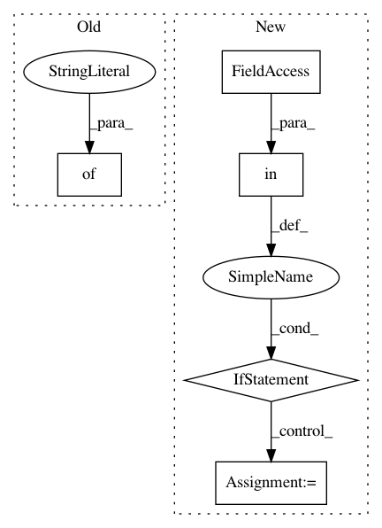

254c997f8d3d2b35b12537dbd542fa51a137fe82,snorkel/models/candidate.py,,candidate_subclass,#,62
Before Change
class_attribs["__table_args__"] = (
UniqueConstraint(*unique_args),
// Note: This still doesn"t fix issue...
{"keep_existing" : True}
)
// Create class
C = type(class_name, (Candidate,), class_attribs)
After Change
values = range(cardinality)
class_spec = (args, table_name, cardinality, values)
if class_name in candidate_subclasses:
if class_spec == candidate_subclasses[class_name][1]:
return candidate_subclasses[class_name][0]
else:
raise ValueError("Candidate subclass " + class_name + " already exists in memory with incompatible " +
"specification: " + str(candidate_subclasses[class_name][1]))
else:
// Set the class attributes == the columns in the database
class_attribs = {
// Declares name for storage table
"__tablename__" : table_name,
// Connects candidate_subclass records to generic Candidate records
"id" : Column(
Integer,
ForeignKey("candidate.id", ondelete="CASCADE"),
primary_key=True
),
// Store values & cardinality information in the class only
"values" : values,
"cardinality" : cardinality,
// Polymorphism information for SQLAlchemy
"__mapper_args__" : {"polymorphic_identity": table_name},
// Helper method to get argument names
"__argnames__" : args,
}
// Create named arguments, i.e. the entity mentions comprising the relation
// mention
// For each entity mention: id, cid ("canonical id"), and pointer to Context
unique_args = []
for arg in args:
// Primary arguments are constituent Contexts, and their ids
class_attribs[arg + "_id"] = Column(
Integer, ForeignKey("context.id", ondelete="CASCADE"))
class_attribs[arg] = relationship(
"Context",
backref=backref(
table_name + "_" + arg + "s",
cascade_backrefs=False,
cascade="all, delete-orphan"
),
cascade_backrefs=False,
foreign_keys=class_attribs[arg + "_id"]
)
unique_args.append(class_attribs[arg + "_id"])
// Canonical ids, to be set post-entity normalization stage
class_attribs[arg + "_cid"] = Column(String)
// Add unique constraints to the arguments
class_attribs["__table_args__"] = (
UniqueConstraint(*unique_args),
)
// Create class
C = type(class_name, (Candidate,), class_attribs)
// Create table in DB
if not snorkel_engine.dialect.has_table(snorkel_engine, table_name):
C.__table__.create(bind=snorkel_engine)
candidate_subclasses[class_name] = C, class_spec
return C
class Marginal(SnorkelBase):
A marginal probability corresponding to a (Candidate, value) pair.
In pattern: SUPERPATTERN
Frequency: 3
Non-data size: 5
Instances
Project Name: snorkel-team/snorkel
Commit Name: 254c997f8d3d2b35b12537dbd542fa51a137fe82
Time: 2017-07-05
Author: stephenhbach@gmail.com
File Name: snorkel/models/candidate.py
Class Name:
Method Name: candidate_subclass
Project Name: arnomoonens/yarll
Commit Name: 90f638b21e811e55c7a11fa087863431303b674b
Time: 2019-09-17
Author: arno.moonens@gmail.com
File Name: yarll/environment/__init__.py
Class Name:
Method Name: register_env
Project Name: PyMVPA/PyMVPA
Commit Name: 6a8d2f59086e71dc529fb5261eb291cd7f2615a9
Time: 2016-10-05
Author: swaroopgj@gmail.com
File Name: mvpa2/measures/rsa.py
Class Name: CDist
Method Name: _call